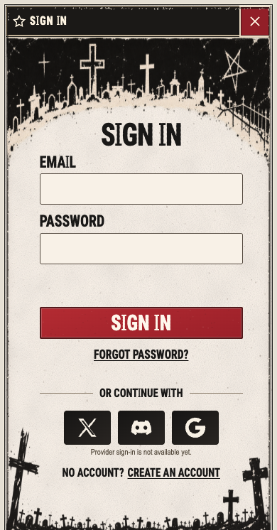
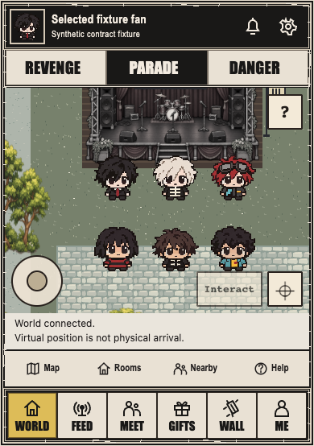
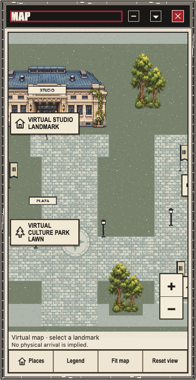
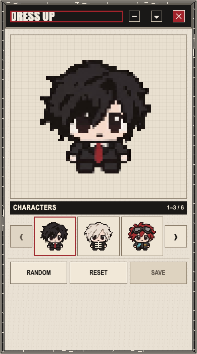
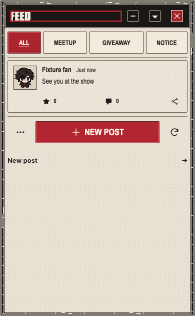
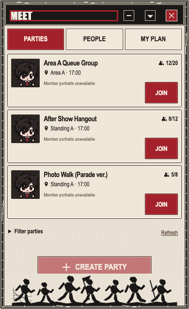
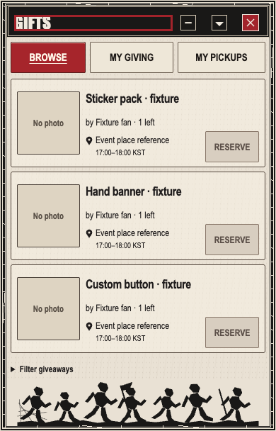
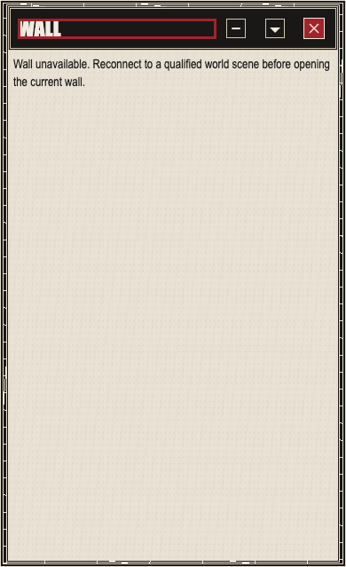
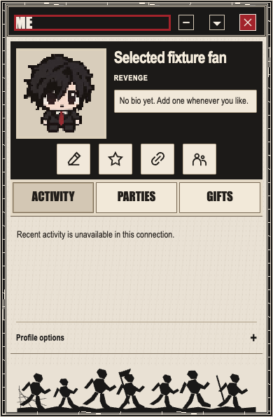

landing · same390px width and reference aspectSupplied unchanged referenceActual current UI · synthetic producers
login · same390px width and reference aspectSupplied unchanged referenceActual current UI · synthetic producers
world · same390px width and reference aspectSupplied unchanged referenceActual current UI · synthetic producers
map · same390px width and reference aspectSupplied unchanged referenceActual current UI · synthetic producers
customize · same390px width and reference aspectSupplied unchanged referenceActual current UI · synthetic producers
feed · same390px width and reference aspectSupplied unchanged referenceActual current UI · synthetic producers
meet · same390px width and reference aspectSupplied unchanged referenceActual current UI · synthetic producers
gifts · same390px width and reference aspectSupplied unchanged referenceActual current UI · synthetic producers
wall · same390px width and reference aspectSupplied unchanged referenceActual current UI · synthetic producers
me · same390px width and reference aspectSupplied unchanged referenceActual current UI · synthetic producers